Bucles
Los bucles son declaraciones similares en cierta manera a la de los condicionales, ya que también dependen de si se cumple una condición o no para ejecutarse, sin embargo los bucles poseen una característica que los diferencia, y esta es la particularidad de que un bucle en el cual se cumple su condición se ejecutará una y otra vez siempre que esta condición siga cumpliéndose, existen dos tipos de bucles: y los determinados:
-
Indeterminados:
Son aquellos bucles a los que no se les indica su duración por lo que podrían ejecutarse infinitamente.
-
Determinados:
Son aquellos bucles a los que se les indica cuántas veces deben ejecutarse, por lo que tienen un número de ejecuciones controlado.
Bucles Indeterminados
While
-
El while se trata del bucle con el funcionamiento más básico, este consiste en una condición la cual se declara luego de la palabra clave "while" utilizada para llamar a la función, si esta condición se cumple el bloque de código delimitado por llaves ( { } ) se ejecutará, y al terminar se analizará si la condición sigue cumpliéndose, de ser así el código se ejecutará nuevamente, y así continuará hasta que la condición deje de cumplirse.
Ejemplo
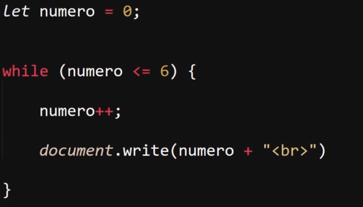
Resultado
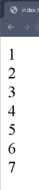
En este ejemplo la condición del bucle se cumple por lo tanto el código en su interior se ejecuta, en el que se le suma uno a la variable "numero" y luego se imprime en pantalla, esto se repite múltiples veces hasta llegado el momento de que la variable "numero" igualó el valor de 6, por lo que en ese momento la condición dejó de cumplirse, por lo que el bloque se detiene.
Nota: en un bucle "while" si la condición no se cumple este será ignorado sin ejecutarse ni una sola vez.
Do While
-
Se trata de un bucle alternativo a "while" con la diferencia de que en este caso la condición se ubica después del código a ejecutar, el cual es contenido por la palabra clave "Do", por lo tanto en este tipo de bucle primero se ejecuta el código de este y de último se valida si se cumple o no la condición, la cual de completarse el bucle se repetirá las veces que sean necesarias hasta que la condición deje de cumplirse.
Por lo tanto este tipo de bucle garantiza que el código en su interior sea ejecutado al menos una vez, ya que primero se procesa el código y luego su condición.
Ejemplo
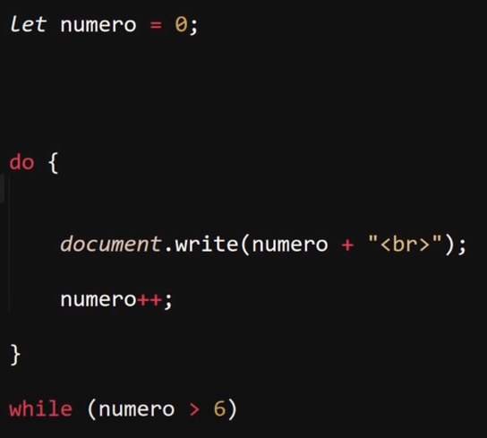
Resultado
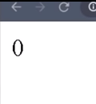
En este ejemplo se puede apreciar cómo pese a que la condición no se cumple el bucle se ejecuta una vez, esto ya que primero se procesa el código y de último la condición.
Se podrá decir que en el bucle "do while" la condición no define el si el bucle se ejecutará, en su lugar define el si el bucle se repetirá o no.
Bucles Determinados
For
-
La estructura que compone este tipo de bucle tiene la particularidad de estar dividida en tres partes, divididas por punto y coma (;) de las cuales cada una define un aspecto de la funcionalidad de este, las tres partes que lo componen son:
-
Declaración e inicialización:
El bucle "For" al ser un bucle determinado es necesario definir el número de veces que se ejecutará, para lo cual en esta primera porción de su estructura se define una variable que actuará como contador de las repeticiones realizadas (Por lo general se nombra como "i" de "increment").
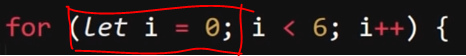
-
Condición:
En esta segunda porción de su estructura se define la condición con la cual, de cumplirse, se ejecutará el bucle.
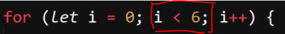
-
Aumento o Decremento:
Por último se encuentra la ejecución del conteo de las repeticiones, en la cual se aumenta o reduce el valor del contador (Variable "i")
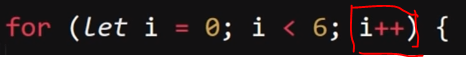
Ejemplo
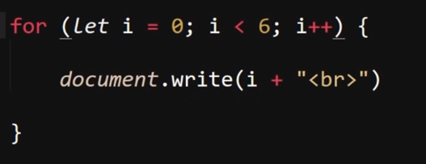
Resultado
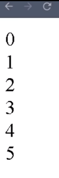
Existe una segunda forma de trabajar con los bucles "for", la cual consiste en definir la variable contador "i" en el exterior del bucle, de este modo de ser necesario la variable pudiese seguir estando disponible fuera de este bloque de código.
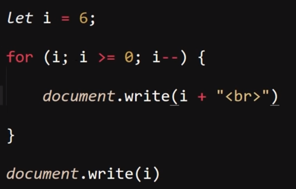
Para esto en vez de inicializar la variable dentro del "for", basta con simplemente llamarla dentro de este.
For In y For Of
-
Se tratan de dos bucles determinados con la característica de que su aplicación es la de recorrer un array, básicamente se tratan de bucles para encontrar valores dentro de estos, en sí el funcionamiento de ambos es igual, lo primero para emplearlos es definir una variable dentro de estos en la cual se almacenarán los datos que se extraigan del array, luego se realiza el llamado a este utilizando su nombre.
Ejemplo For In
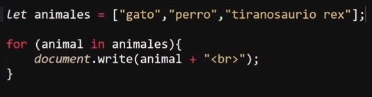
Ejemplo For Of
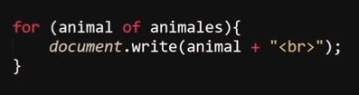
En estos ejemplos los bucles extraen los datos del array "animales" y los almacenan en su variable interna "animal", por cada dato realiza una repetición y se extrae un dato.
Estos bucles no necesitan de condición y el rol de su contador lo realizarán los datos del array, ya que este bucle se ejecutará una vez por cada dato en este, sin embargo en cuanto a qué datos se extraen del array existe una diferencia entre ambos:
-
For In
Este bucle únicamente extraerá la posición (numeración) de los datos del array.
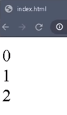
En este ejemplo se imprime en pantalla los datos almacenados en la variable "animal" en cada una de sus ejecuciones, de los cuales cada uno corresponde a la posición (numeración) de cada dato del array.
-
For Of
Este bucle se encarga de extraer el valor de los datos dentro del array.
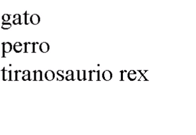
En este ejemplo se imprime en pantalla los datos almacenados en la variable "animal" en cada una de sus ejecuciones, en los cuales se extrae el valor de los datos del array.
En resumen el "For In" y el "For Of" son bucles que extraen datos de un array, el "For In" extrae la posición de estos (numeración) mientras que "For Of" extrae el valor de los datos del array.
Sentencias
Break
-
Se trata de una sentencia con la función de forzar la culminación de un bucle, es decir esta palabra clave al ejecutarse obliga al bucle en el que se encuentre a detenerse en ese momento.
Ejemplo
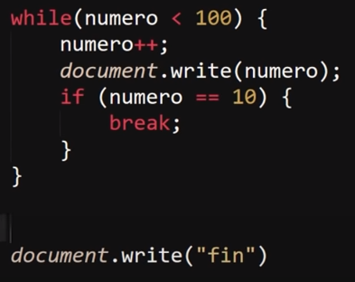
Resultado
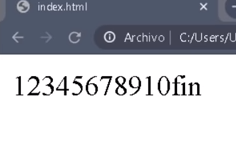
En este ejemplo se definió un bucle que se ejecutará hasta que la variable "numero" alcance un valor de "100", sin embargo dentro de este también se incluyó un condicional (if) con la sentencia de que cuando el "numero" alcance el valor de "10" se aplique la sentencia break forzando la culminación del bucle y continuando con el código del documento JS.
Continue
-
"Continue" es una sentencia con un funcionamiento similar al de "Break", sin embargo su efecto se diferencia en que este no termina por completo el bucle, únicamente termina la interacción en la que se encuentre, es decir esta sentencia permite saltarse alguna de las repeticiones del bucle permitiendo que este continúe ejecutándose.
Código
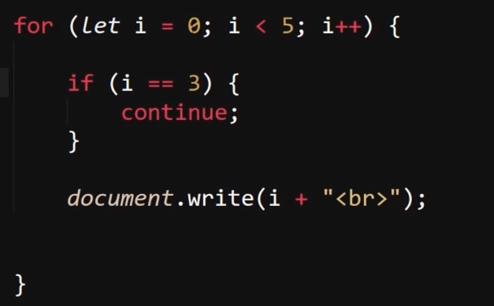
Resultado
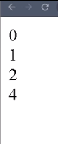
En este ejemplo se generó un bucle for que imprimirá en pantalla los números de su contador, empezando por el cero hasta que este alcance un valor de "5", sin embargo dentro de este se encuentra un condicional "if" aplicando la sentencia "continue" para saltarse la interacción correspondiente a cuando el contador tenga un valor de "3".
Label
-
En sí esta no se trata de una sentencia, sino de una funcionalidad, consiste en generar un nombre para un bucle, para de esa forma identificarlo entre los demás, este recurso es útil para los casos en los que se defina un bucle dentro de otro, ya que de ese modo es posible indicar a cuál de todos los bucles se le desea aplicar un "break" o un "continue", ya que en condiciones normales el "break" o el "continue" afectan únicamente al bucle inmediato en el que se encuentran.
Ejemplo sin label
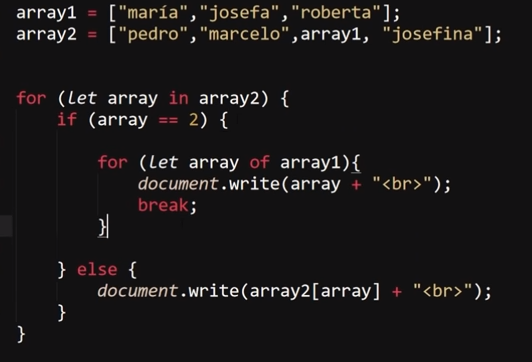
Resultado sin label
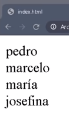
En este ejemplo se generó un sistema de dos bucles uno dentro de otro, en el cual se realiza una doble búsqueda utilizando un bucle "For In" para el array externo y un "For Of" para el array interno, (se usaron ambos simplemente por la explicación del curso) también se utiliza un condicional (If) para definir que solo se realice el segundo bucle al tratarse del elemento deseado (segundo array), luego de la primera ejecución del "For Of" se emplea un break para romper la ejecución del bucle, y de ese modo no se muestren todos los datos que este posee.
La sintaxis de un label consiste en incluir el nombre del bucle seguido de dos puntos (:) todo escrito sin espacios, completamente pegado, y debe estar ubicado justo antes (o encima) del inicio del bucle.
Ejemplo con label
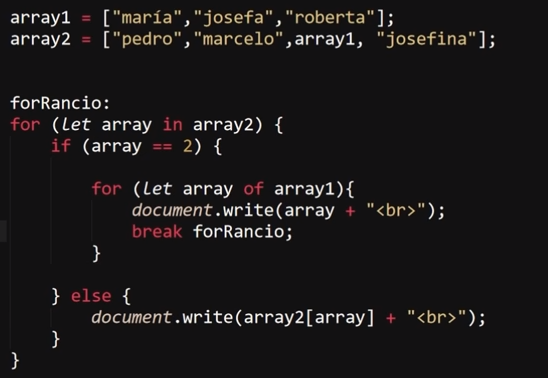
Resultado con label
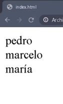
En el primer caso de uso la sentencia Break se usó de forma normal para romper el bucle en el que se encontraba, sin embargo en este nuevo caso de uso, al generar el label del bucle atribuyéndole el nombre "forRancio" y utilizarlo para definir que el break debe forzar la detención del bucle externo, de este modo se culmina con la ejecución de todo el bloque de código, de ese modo se puede definir a qué bucle aplicar un break o un continue impidiendo en este caso que se muestre el último dato del array externo (josefina).